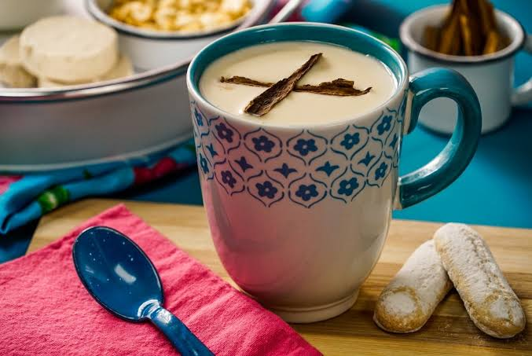

Atole
Corn in Mexico is not only eaten, but also drunk as a beverage. Corn is the base of a hot drink called atole, which is then flavored with fruit, chocolate, rice or other flavors.
Tejuino
Fermented corn is the base of a cold drink, which goes by different names and varieties, such as tejuino, pozol and others. Aguas frescas are flavored drinks usually made from fruit, water and sugar. Beverages also include hibiscus iced tea, one made from tamarind and one from rice called "horchata". One variant of coffee is cafe de olla, which is coffee brewed with cinnamon and raw sugar. Many of the most popular beverages can be found sold by street vendors and juice bars in Mexico.
Chocolate Based Drinks
Chocolate played an important part in the history of Mexican cuisine. The word "chocolate" originated from Mexico's Aztec cuisine, derived from the Nahuatl word xocolatl. Chocolate was first drunk rather than eaten. It was also used for religious rituals. The Maya civilization grew cacao trees[56] and used the cacao seeds it produced to make a frothy, bitter drink. The drink, called xocoatl, was often flavored with vanilla, chile pepper, and achiote